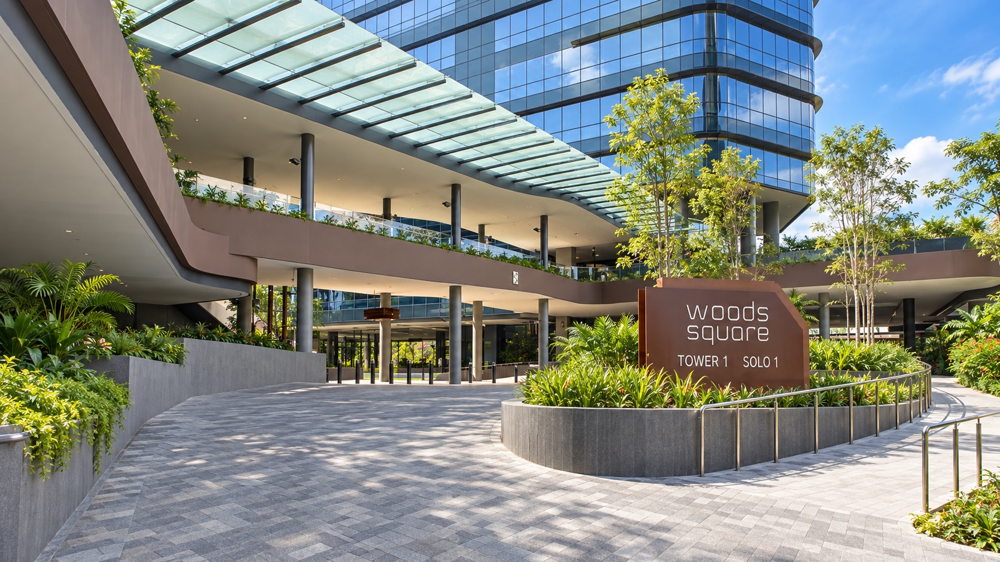
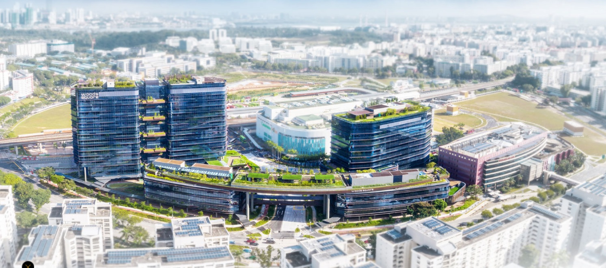

Contact us
Come by the studio.
We are at Woods Square in Woodlands, a few minutes' walk from Woodlands MRT. Drop in to talk through your home, see materials in person and meet the team.
- Address
- 10 Woodlands Square, #04-43
Woods Square Solo 1
Singapore 737714 - Getting here
- 3 to 5 min walk from Woodlands MRT (NS9 / TE2)
Parking at Basement 2

Find us
Look for Solo 1.
Woods Square has four blocks: Tower 1, Tower 2, Solo 1 and Solo 2. We are in Solo 1, the low block beside Tower 1, on level 4.

Tower 1 Causeway Point Tower 2 Civic Centre Solo 2 Solo 1 · We are here